来源：https://ytsvsr6zj8.feishu.cn/docx/PaDFdYQ7zosmtWx35O9cpwdenEY
参加了 2024 年12月 comfyui 航海，这才发现：无论是学习 Comfyui ，还是想熟练运用它，门槛都不低，多数时间都是满脑袋问号。
怎么样能快速掌握 comfyui 呢？
我把学习 comfyui 的经验，分成 3 步，快速上手 comfyui，为你全面运用 comfyui 打下基础，这也是本文的重心所在：
我是产品经理，所写文字，尽量叫你一看就懂。可是，我也是初学者，很多知识点，是否理解到位，不敢保证。
若有疏漏，敬请指导。
另：里面的很多内容，或我问 Ai ，或参考他人的文档，综合而成，确实做不到了一一原创了。
hi，认识你很高兴，i am 望月
一言概之：文生图（Text-to-Image）
这是 ComfyUI 的核心功能，也是最常用的功能。创作者能够通过文字描述，生成复杂的艺术作品。
Ai 产品升级迭代飞快，comfyui 应用领域，并不局限于文生图，还有其他领域，例如：Ai 图像（最常用）、Ai 视频、Ai 音频、Ai 3D、Ai 文本等等。
知识点：文生图工作原理
第 1、输入提示词：用户输入一段文字描述，通常是关于图像的内容、风格、色调、氛围等方面的提示。
比如：“一只穿着西装的猫，站在城市的街头，背景是傍晚的光景”。
第 2、模型解析：AI 模型会分析输入的文本，理解其中的关键词和语境，并基于其理解来生成图像。
例如，模型会识别“西装”、“猫”、“城市街头”和“傍晚光景”这些元素，并根据它们之间的关系，构建出符合这些描述的图像。
第 3、生成图像：模型根据解析后的文本信息，通过一系列复杂的数学计算（通常是基于卷积神经网络、扩散模型等技术），生成图像。最终的图像呈现出来，用户可以根据需要进行进一步编辑和优化。
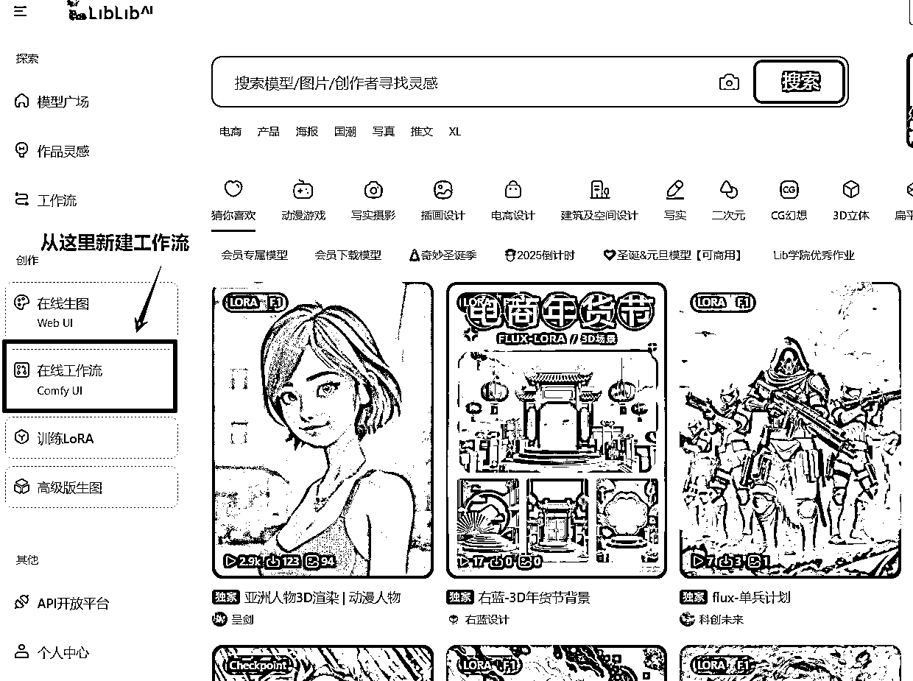
新手推荐在线模式，优先上手使用，体会。熟悉了之后，再转入本地。
推荐：https://www.liblib.art/
本地安装，无论是电脑硬件，下载对应的模型，插件，包含了一系列设置，确实要耗费蛮多时间。新手不建议上来就执行这一步。
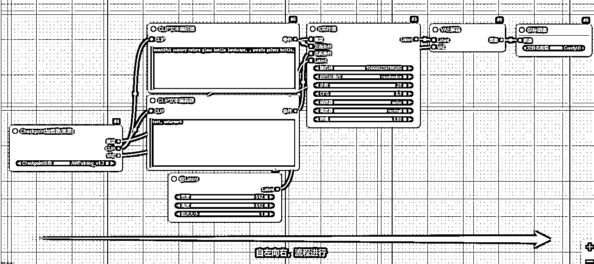
你看到图片上的一个一个黑色矩形，就是节点（node），每个节点依照一定的顺序，依靠连线（"connections" 或 "links"）前后相连，一步步，共同完成某一具体任务，这种方式就是所谓的工作流（workflow）。
简单理解工作流：工作流，是按照一定步骤，先后有序，完成特定任务。
注：工作流并不是一个新鲜的概念，相反，有一点历史了，而且很多领域都有用工作流。（例如 2B 领域内，不过它会有另外的名字，例如，业务流，操作流等等）
为什么要使用工作流呢？
第1、依需而建：自由搭建适合你自己的工作流，而不是受到各种各样的限制。（也正因如此，提高了学习门槛）
第2、自由拓展：可以使用、改造别人的工作流，或者新建属于自己的节点，灵活应对待解决的问题。
工作流概念：
工作流优势：
工作流中每一黑色的矩形，叫节点（node），每个节点负责某一具体功能（程序设计里面模块化的思路）
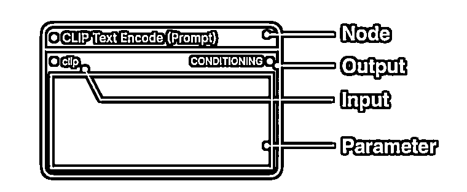
Comfyui 里面每一个方块，称之为 Node（节点）
左侧端的点是Input（输入）端，
右侧是Output（输出）端，
每个节点里都会有对应的配置项，称之为 Parameter (参数)
节点特点：
节点类型举例：
连线是把每一个单独的节点前后相连，而后形成一个完整的工作流。
连线作用：
连线特点：
连线只能是连接同类数据，不同数据格式，无法相连。
可以记忆为：同色相连
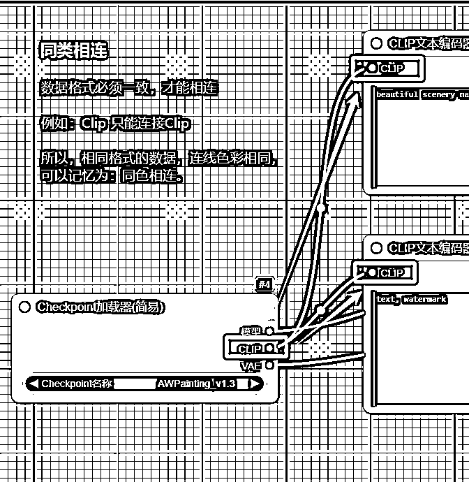
其实就是节点的特点，左边为输入数据，供某个节点使用，节点加工后的数据，从右侧输出。
也就是说，把某一个节点的输入数据，再输入给下一个节点的输入端。
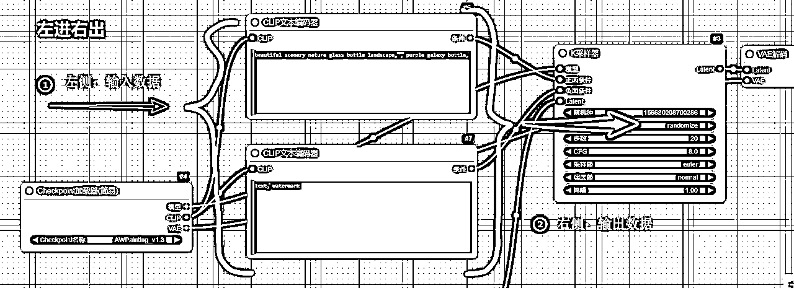
左侧的输入端，只能接收一条线。
右侧的输出端，则可以输出多条连线。
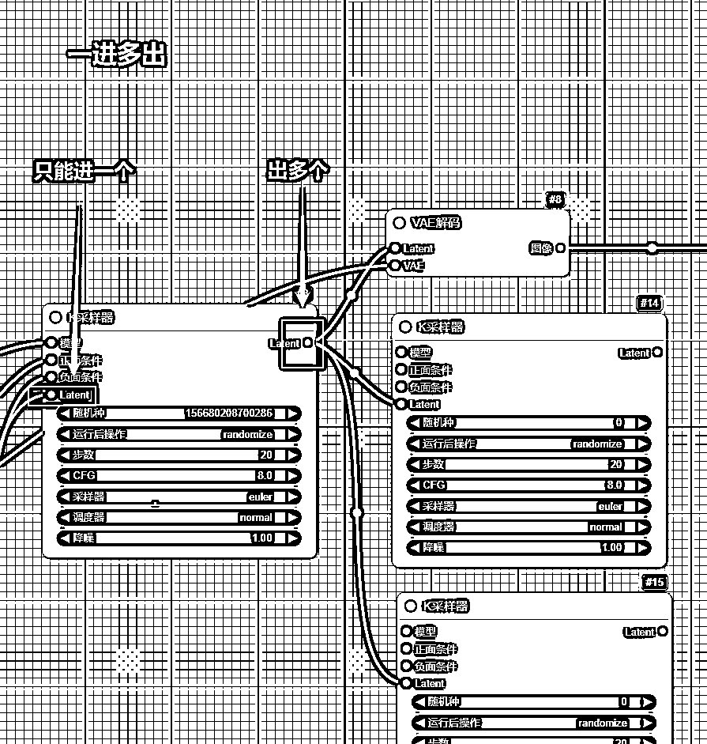
学习了 comfyui 的核心概念，下一步，就是理解 Comfyui 的核心功能。
这一部分，先由节点展开，而后是工作流，理解了节点与工作流的关系，等于掌握了文生图功能，也就等于掌握了comfyui 的核心功能。
文生图的功能，官方会默认给你加载一最基础的工作流，必要的节点如下：
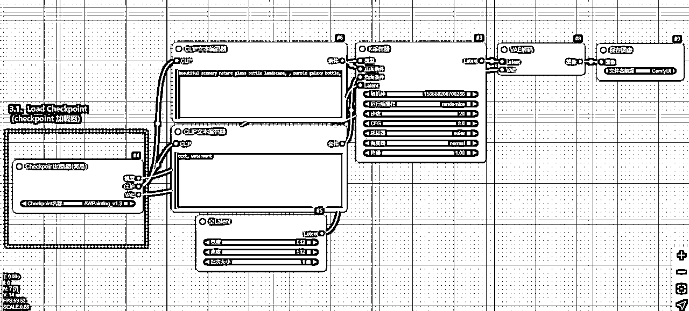
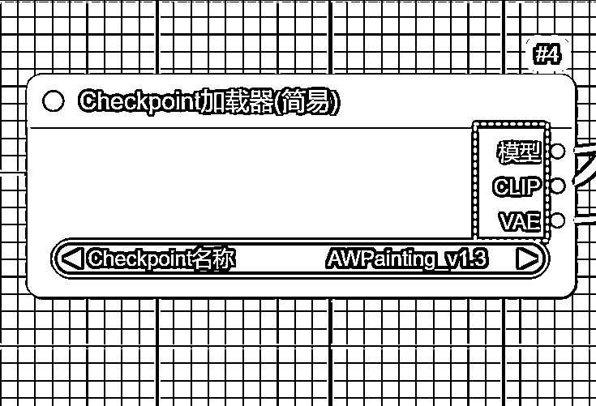
Checkpoint 加载器是所有 ComfyUI 工作流的起点，用户需要先加载 Checkpoint ，才能开始配置和运行生成任务。
Checkpoint 是 Stable Diffusion 模型的核心，包含了 MODEL（UNet）、CLIP 和 VAE 三个部分，分别负责去噪、文本理解和图像解码，共同完成从文本到图像的生成过程。
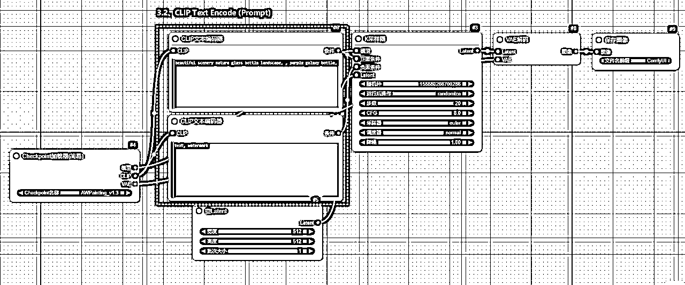
CLIP 全称是 Contrastive Language-Image Pre-training，即对比文本图像预训练。
这个节点主要是输入 Prompt：
一般会有两个这样的节点，一个是正向的 Prompt，列你希望在图片中看到的内容；
另一个是负向的 Prompt，列你不希望在图片中出现的内容。
1、Prompt 并不是越长越好，尽量保持在 75 个 token（或约 60 个字）以内。
2、使用逗号分隔。StableDiffusion 并不懂语法，需要的关键词罗列出来即可，用逗号（英文半角符号）分隔。
3、越重要的词，越放在靠前的位置。例如：想要生成一张美丽的风景图，将 beautiful scenery nature 放在最前面。
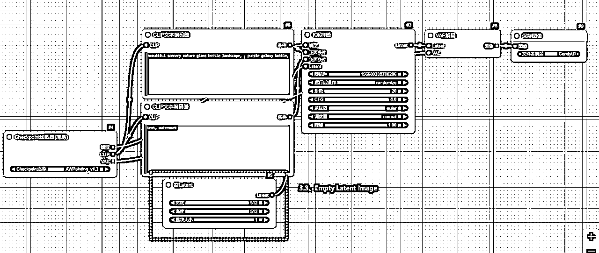
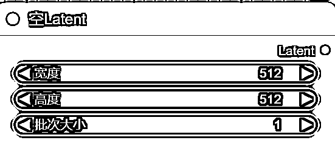
空的潜空间图像节点，调整最终生成的图片的大小，就需要调整 width（宽）、height（高）这两个值。
batch_size：批次，则是设置每次运行时生成的图片数量，设置成了 6，就意味着每次会生成 6 张图。
比例关系：8 的倍数，即图片的宽、高，都是 8 的倍数。
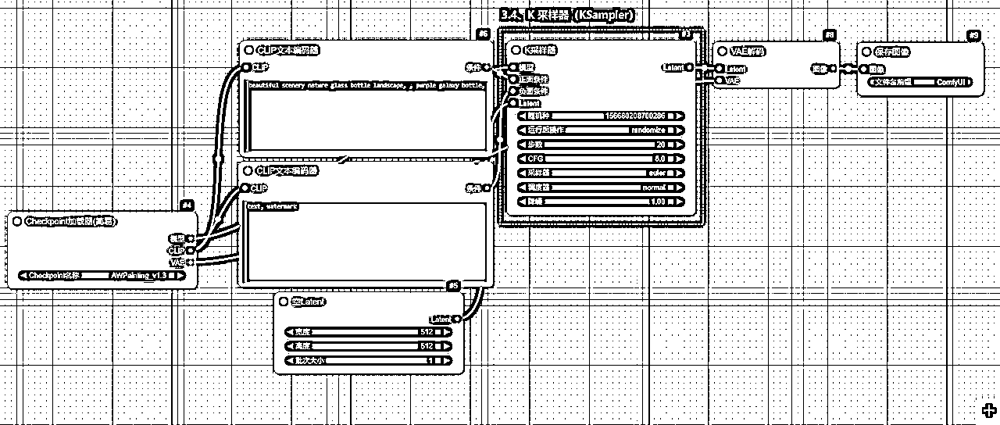
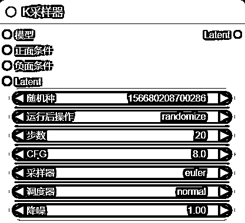
KSampler，Sampler 中文名称是采样器，K 采样器是 ComfyUI 中的一个核心模块，负责生成图像的主要过程。
K 采样器就像是一个"画家"，它负责把你的文字描述（prompt）一步一步变成图像。
它的工作过程是从一张充满噪点的图片开始，慢慢把噪点去掉，最终形成你想要的图片。
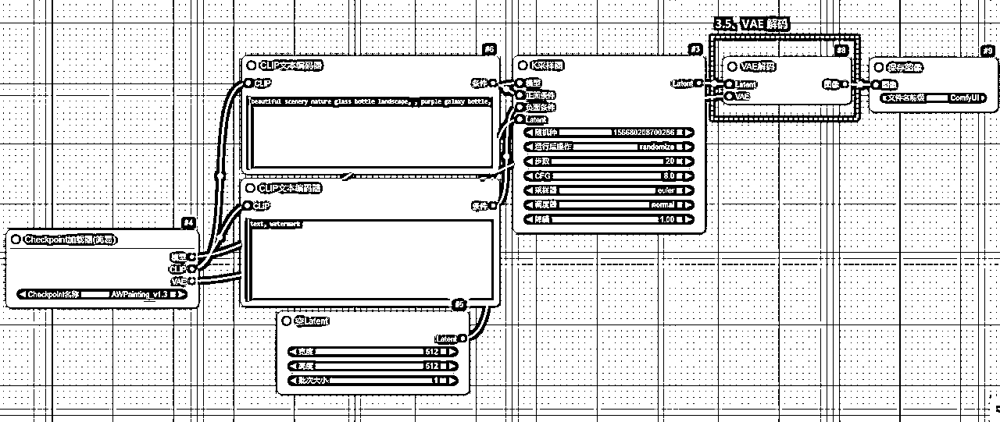
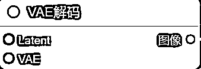
VAE解码的英文全称是 "Variational Autoencoder Decode"，中文名称是“变分自编码器解码
VAE解码器是 ComfyUI 一个重要的组件，其作用，是将潜在空间中的信息转换为可视化的图像。
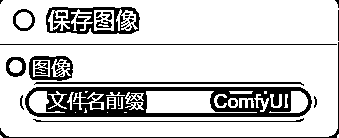
这一节点的功能，是最容易理解的，其主要职责：
节点用连线前后连接起来，就形成了工作流，comfyui 的核心功能，文生图，正是依靠工作流来完成。
总结一下，comfuyi 的文生图工作流如下：
我们把上面提到的各个节点，分别汇入到这个流程中：这个时候，你大概知道 comfyui 的工作流是怎么样开展了。
接下来就是要详细掌握各个节点，也就是comfyui的基础节点
吐槽
作为产品经理，我一次次佩服 AI 类产品的 Ui 设计，真是烂！！！
功能强大，半点都不否认。
Ui设计之烂，一个比一个烂，个个都奇葩。
初学者，初次面对，这么乌压压一堆加载器，知道每个都是做什么的吗？
而且把这么多功能，都集中在鼠标里，也是烂设计。
不过，还得学。
第1、基础模型加载
Checkpoint加载器：
第2、特殊功能加载
专业加载器：
第3、风格调整加载
风格加载器：
比喻说明
想象准备画画的过程：
加载器就像：
├── 选择画笔类型
├── 准备颜料组合
├── 调配工具材料
└── 设置画板环境
感谢伟大的 Ai，可以叫 Ai 直接给你分类，然后快速抓住精髓。
核心功能：
├── Checkpoint加载器(简易) - 基础模型加载
├── VAE加载器 - 图像编码解码
└── LoRA加载器 - 基础风格微调
掌握目标：
图像控制：
├── ControlNet加载器 - 精确控制生成
├── DiffControlNet加载器 - 差异化控制
└── InstantXFluxUnionControlNet加载器 - 联合控制
风格调整：
├── 风格模型加载器 - 风格应用
├── LoRA加载器(仅模型) - 专注模型加载
├── MultiLora Loader - 多重风格
└── Load LoRA Tag - 标签式加载
图像优化：
└── 放大模型加载器 - 提升分辨率
视觉处理：
├── CLIP视觉加载器 - 视觉理解
├── unCLIPCheckpoint加载器 - 特殊检查点
└── Deep Cache - 深度缓存
高级功能：
├── 超网络加载器 - 网络增强
├── Checkpoint加载器(NF4) - 特殊格式
└── ResAdapter加载器 - 适配器加载
特殊应用：
├── 视频模型 - 视频处理
├── Comfy Couple - 模型配对
└── Lora加载器(标签队列) - 队列处理
自定义加载：
├── LoRA加载器(pysss) - Python扩展
└── Checkpoint载器(pysss) - 定制检查点
条件节点的核心作用是"引导和控制"生成过程。
注：
上面工作流所提到的，CLIP 文本编码器 （CLIP Text Encode），主要是用于提示词的输入，其实就是一个条件节点
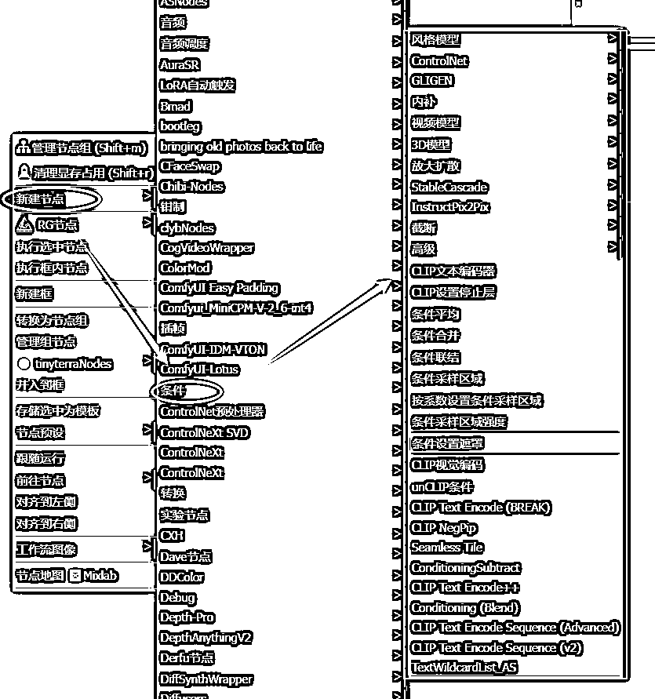
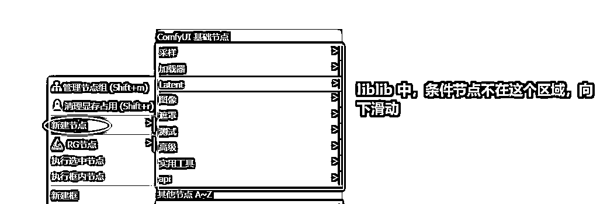
节点核心作用
第1、引导生成方向
就像画画：
├── 提示词：告诉AI"画什么"
├── 参考图：告诉AI"怎么画"
└── 控制条件：告诉AI"画得更精确"
第2、控制生成细节
精确控制：
├── 构图布局
├── 风格特征
├── 细节表现
└── 生成区域
具体应用场景
第1、文本引导
CLIP文本编码器：
第2、图像引导
ControlNet：
第3、条件采样区域：
比喻说明
想象一个画画的过程：
加载器：准备画笔和颜料
条件节点：
├── 画画的参考资料
├── 构图的指导线
├── 色彩的参考样本
└── 细节的示范图
文本条件：
├── CLIP文本编码器 - 基础文本编码
├── CLIP Text Encode++ - 增强版文本编码
└── CLIP NegPip - 负面提示处理
视觉条件：
└── CLIP视觉编码 - 图像特征提取
精确控制：
├── ControlNet - 图像引导控制
├── GLIGEN - 布局控制
└── 内补 - 图像修复
增强控制：
├── 放大扩散 - 提升分辨率
└── StableCascade - 级联生成
条件组合：
├── 条件平均 - 多条件平均
├── 条件合并 - 条件组合
├── 条件联结 - 条件连接
└── Conditioning (Blend) - 条件混合
条件区域：
├── 条件采样区域 - 区域控制
├── 按系数设置条件采样区域 - 系数控制
└── 条件采样区域强度 - 强度控制
特殊处理：
├── 截断 - 条件截断
├── CLIP设置停止层 - 层级控制
└── Seamless Tile - 无缝平铺
高级功能：
├── unCLIP条件 - 特殊条件处理
├── InstructPix2Pix - 图像指令处理
└── 3D模型 - 3D相关条件
序列处理：
├── CLIP Text Encode Sequence (Advanced)
├── CLIP Text Encode Sequence (v2)
└── TextWildcardList_AS
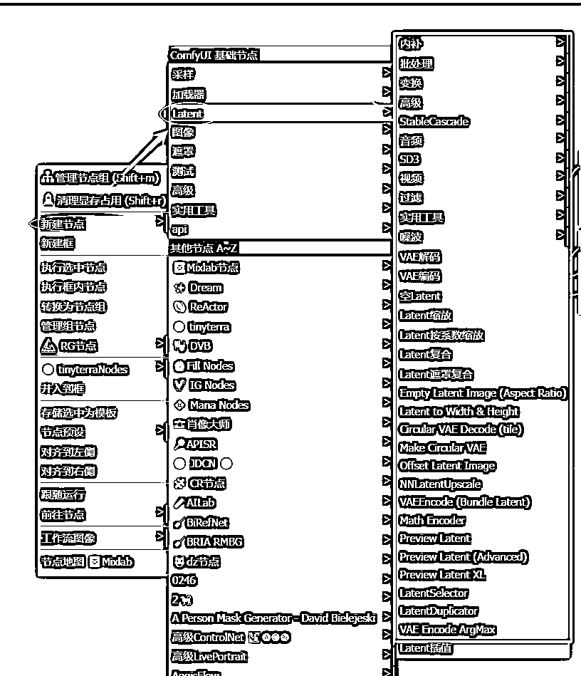
核心作用
第1、潜空间操作与管理
就像在画布上：
├── 创建画布：空Latent
├── 调整画布：缩放变换
├── 合并画布：复合操作
└── 预览效果：潜空间预览
第2、数据转换与处理
空间转换：
├── 图像→潜空间（VAE编码）
├── 潜空间→图像（VAE解码）
├── 尺寸变换
└── 特效处理
具体应用场景
第1、潜空间准备
第2、中间处理
第3、转换控制
比喻说明
想象绘画过程中的画布操作：
Latent就像：
├── 准备画布（创建空间）
├── 调整画布大小（缩放）
├── 拼接多个画布（复合）
└── 转换展示效果（编解码）
基础操作：
├── 空Latent - 创建基础潜空间
├── VAE编码 - 图像转潜空间
├── VAE解码 - 潜空间转图像
└── Latent缩放 - 基础尺寸调整
预览功能：
├── Preview Latent - 基础预览
└── Preview Latent XL - SDXL预览
尺寸处理：
├── Latent按系数缩放 - 比例缩放
├── NNLatentUpscale - 神经网络放大
└── Latent to Width & Height - 精确尺寸
组合处理：
├── Latent复合 - 基础组合
├── Latent遮罩复合 - 遮罩组合
└── Offset Latent Image - 偏移处理
特殊处理：
├── 内补 - 图像修复
├── StableCascade - 级联处理
└── Latent插值 - 渐变过渡
批量处理：
├── 批处理 - 批量生成
├── LatentSelector - 选择器
└── LatentDuplicator - 复制器
特殊功能：
├── Circular VAE Decode - 圆形解码
├── Make Circular VAE - 圆形编码
└── VAE Encode ArgMax - 最大值编码
媒体处理：
├── 音频 - 音频相关
├── SD3 - SD3.0特性
└── 视频 - 视频处理
辅助工具：
├── Math Encoder - 数学编码
├── VAEEncode (Bundle) - 批量编码
└── Empty Latent (Aspect Ratio) - 比例创建
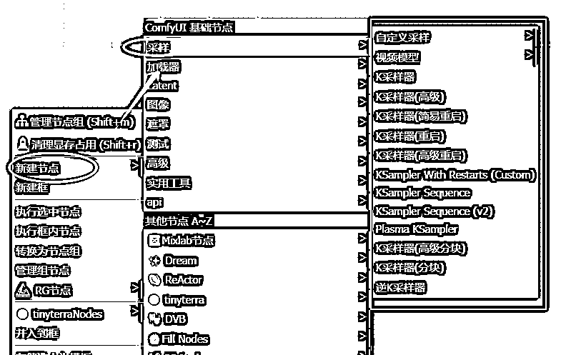
核心作用
第1、噪声处理与图像生成
就像画家作画的过程：
├── 从模糊到清晰（去噪过程）
├── 控制细节程度（采样步数）
├── 把握整体风格（CFG指引）
└── 调整绘制方式（采样算法）
第2、生成过程控制
精确控制：
├── 生成速度（步数设置）
├── 生成质量（采样算法）
├── 细节保真（去噪强度）
└── 提示词匹配度（CFG值）
具体应用场景
第1、基础生成控制
标准采样：
第2、质量优化
高级采样：
第3、特殊需求处理
专业采样：
比喻说明
想象一个画家的创作过程：
采样器就像：
├── 画家的手法（采样算法）
├── 绘画的节奏（步数）
├── 修改的力度（去噪强度）
└── 参考图的对照（CFG）
基础采样：
├── K采样器 - 标准采样器
├── K采样器(高级) - 高级控制版本
└── K采样器(简易重启) - 基础重启功能
重启系列：
├── K采样器(重启) - 标准重启
├── K采样器(高级重启) - 高级重启控制
└── KSampler With Restarts (Custom) - 自定义重启
序列采样：
├── KSampler Sequence - 基础序列
├── KSampler Sequence (v2) - 增强序列
└── Plasma KSampler - 特殊效果采样
特殊处理：
├── K采样器(高级分块) - 高级分块控制
├── K采样器(分块) - 基础分块处理
└── 逆K采样器 - 反向采样处理
模型特化：
├── 自定义采样 - 自定义控制
└── 视频模型 - 视频专用采样
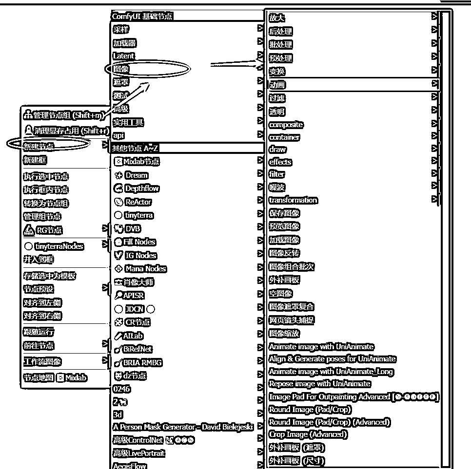
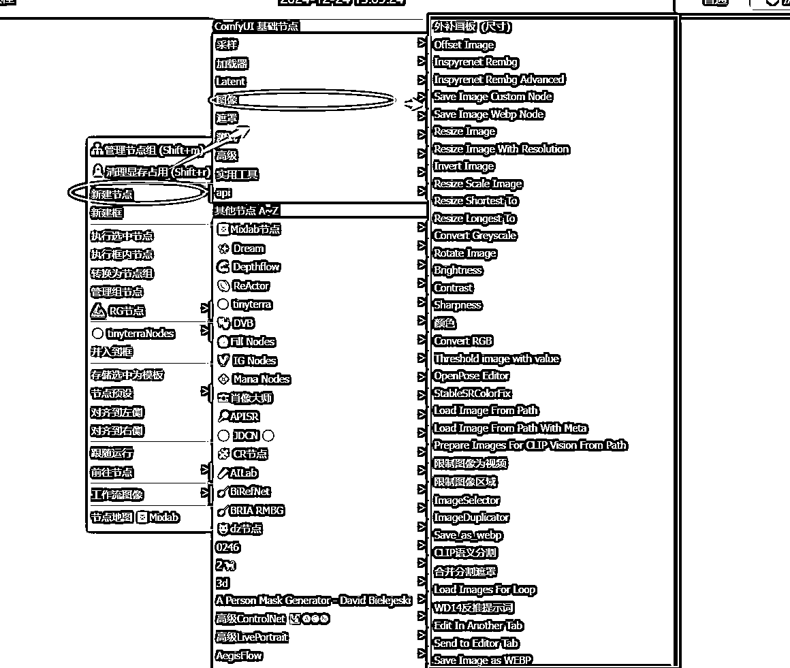
核心作用
第1、图像处理与转换
就像后期处理工作：
├── 图像加载（输入处理）
├── 图像编辑（调整修改）
├── 效果处理（滤镜特效）
└── 图像导出（保存输出）
第2、质量控制与优化
图像优化：
├── 尺寸调整（放大缩小）
├── 清晰度提升（超分辨率）
├── 颜色处理（色彩调整）
└── 细节增强（图像锐化）
具体应用场景
第1、基础图像处理
常规操作：
第2、图像编辑增强
编辑功能：
第3、专业效果处理
高级处理：
比喻说明
想象照片后期处理：
图像节点就像：
├── 照片导入（输入）
├── PS处理（编辑）
├── 滤镜应用（效果）
└── 成片导出（输出）
基本操作：
├── 加载图像
│ ├── 加载图像
│ ├── Load Image From Path
│ └── Load Image From Path With Meta
│
├── 保存图像
│ ├── 保存图像
│ ├── Save Image Custom Node
│ └── Save Image Webp Node
│
└── 预览图像
尺寸调整：
├── 图像缩放
├── Resize Image
├── Resize Scale Image
├── Resize Shortest To
└── Resize Longest To
基础编辑：
├── 图像反转
├── Rotate Image
├── Brightness
├── Contrast
└── Sharpness
颜色处理：
├── 颜色调整
├── Convert RGB
├── Convert Greyscale
└── StableSRColorFix
合成与遮罩：
├── 图像遮罩复合
├── composite
└── 图像组合批次
外补处理：
├── 外补画板
├── 外补画板 (遮罩)
└── 外补画板 (尺寸)
特殊效果：
├── effects
├── filter
└── transformation
AI增强：
├── OpenPose Editor
├── CLIP语义分割
└── WD14反推提示词
透明处理：
├── Inspyrenet Rembg
└── Inspyrenet Rembg Advanced
圆形处理：
├── Round Image (Pad/Crop)
└── Round Image (Pad/Crop) (Advanced)
批量处理：
├── Load Images For Loop
├── ImageSelector
└── ImageDuplicator
限制处理：
├── 限制图像为视频
└── 限制图像区域
从上面可以看出来，模型质量，很大程度决定了你最后成图的质量，找好对应的模型，根据自己的需要去练习。
模型有很多，可以从下面的 10 个模型开始：
https://www.comflowy.com/zh-CN/blog/ten-models-worth-downloading
Liblib 搜对应的名字就可以了。
Comfyui 擅长生成图片，但发展到今天，生成图的方式，已经是多种多样了。
目前我也是新手，这一部分还在练习，所以，只是在这里简单列举一下，后面再补充。
定义：通过输入文字提示，生成相应的图片。主要依赖于文字描述来引导图像生成。
例子：输入提示词“夏日沙滩上的日落”，模型生成一幅展现海滩、太阳下沉的美丽画面
定义：通过一张已有的图片和文字提示共同生成新的图像，图片作为补充信息，增强生成效果。
例子：输入一张草地的图片，再加上提示词“加上一个在草地上打高尔夫的人”，模型会在原图基础上生成一个人物并修改场景。
定义：将图片的分辨率提升，使其更加清晰或细节更加丰富。
例子：输入一张低分辨率的风景照，使用 Upscale 功能后，图片细节变得更清晰，边缘更加锐利。
定义：在图片的指定区域进行修改或补充，通常用于修复缺失、损坏的部分，或者创作新的细节。
例子：在一张人物画像中，模型可以用 Inpainting 来修复或替换人物的衣服、背景或其他缺失的部分。
定义：在现有图像的边缘扩展区域，创造更多的背景或场景，类似于扩展图像的画布。
例子：给一幅城市街景图像增加更多的街道、建筑物或天空，甚至是延伸到更多的地理场景。
定义：通过输入图片的结构信息（如简笔画、轮廓、边缘等）来控制图像生成的风格和内容。
例子：输入一张简单的轮廓图，模型根据轮廓生成详细的艺术画作，或者输入一张现实图片，并控制其风格为油画、素描等。
（本文止。实践篇的心得体会，后面会更新上来。）